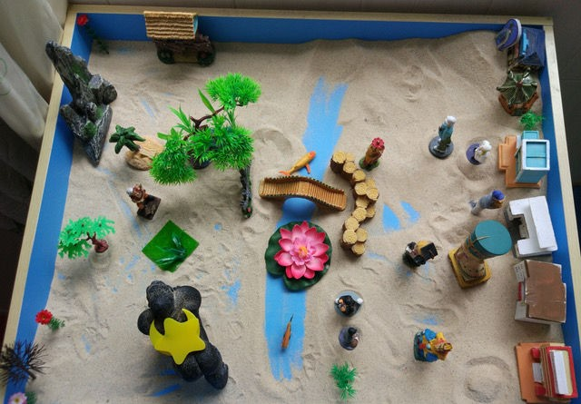

孩子上课注意力老是不集中，走神、乱动，扰乱课堂秩序；一言不合就大打出手，身边的同学都避之唯恐不及；平时看起来挺乖，但拿起书本就像脑筋“短路”，根本看不下去……在您身边，是否也有这样让人头痛的孩子？老师的劝诫、家长的管束甚至打骂全都不奏效后，人们只能摇摇头，用一句“太调皮”来解释孩子的反常。可是您有没有想过，这或许是孩子需要帮助的信号？
在蒲城县北关小学-蒲城县桥山中学的心理咨询室，孩子们在专业老师的引导下，他们或通过沙盘来舒缓压力，或通过游戏来锻炼专注度。学校的心理咨询室通过与专业机构合作的方式，不仅拓宽了心理健康教育的广度，更挖掘其深度。目前，学校已经通过德育全覆盖、心理咨询室针对辅导、外来心理专家聘用等方式，建立起全方位、分层次的心理健康保障机制。
行为“跑偏”或是心理问题
2017年4月，学校心理咨询室引入了专业机构——深圳市仰和心理咨询有限公司。说起和机构合作的初衷，校长林志浩说：“身心健康是美好生活的基础。如果没有健康的心理，什么成绩都是空谈。而对于小学生来说，因为语言表达、沟通技巧、对师长权威的害怕，心理问题常常被深深地隐藏，无法引起大家的注意。我希望通过学校的努力，让孩子们提前预防问题、及时发现问题、尽早疏导问题。”普及性的心理健康教育，往往与德育教育相结合。学校每月会结合主题班会、黑板报、演讲等，润物细无声地引导孩子们积极勤勉地看待学习和生活。学校每周三还开展30多个主题的社团活动，涵盖了文艺、体育、科学等各个领域，孩子们得以在丰富多彩的环境中快乐成长，减少心理问题的发生。
但是，只是“打预防针”还是不够的。专业机构进驻后，对班主任筛选的部分“问题学生”进行了心理排查，结果发现，很多行为规范上“跑偏”的孩子，实际都有其心理根源。
讳疾忌医不是解决办法
蒲城县北关小学-蒲城县桥山中学的心理工作，不仅为班主任分忧，也得到了家长们的一致好评。看着孩子的行为一天天改善，性格一天天开朗，家长们很多烦忧都迎刃而解。

△ 通过沙盘，心理专家可以读出孩子的内心。
不过，并不是所有家长都能正视孩子的心理问题。讳疾忌医，这成了景田学心理工作在实际推进中遇到的最大阻碍。“的确有一些家长，坚决不愿承认孩子心理有问题。我们的心理咨询师建议家长带孩子去专业的心理门诊、医院检查，有些家长也是置若罔闻。” 蔺玲老师表示，小学年龄段的学生，最多的心理问题是注意力分散、情绪波动、交往障碍等。她建议家长要多和孩子交流，关注孩子的感受，“一个有问题的孩子背后，百分之百是一个有问题的家庭。所以关注孩子的心理健康，家长义不容辞。”